第一门课 神经网络和深度学习(Neural Networks and Deep Learning)第一周：深度学习引言(Introduction to Deep Learning)1.1 欢迎(Welcome)1.2 什么是神经网络？(What is a Neural Network)1.3 神经网络的监督学习(Supervised Learning with Neural Networks)1.4 为什么深度学习会兴起？(Why is Deep Learning taking off?)1.5 关于这门课(About this Course)1.6 课程资源(Course Resources)
第一个视频主要讲了什么是深度学习，深度学习能做些什么事情。以下是吴恩达老师的原话：
深度学习改变了传统互联网业务，例如如网络搜索和广告。但是深度学习同时也使得许多新产品和企业以很多方式帮助人们，从获得更好的健康关注。
深度学习做的非常好的一个方面就是读取X光图像，到生活中的个性化教育，到精准化农业，甚至到驾驶汽车以及其它一些方面。如果你想要学习深度学习的这些工具，并应用它们来做这些令人窒息的操作，本课程将帮助你做到这一点。当你完成cousera上面的这一系列专项课程，你将能更加自信的继续深度学习之路。在接下来的十年中，我认为我们所有人都有机会创造一个惊人的世界和社会，这就是AI（人工智能）的力量。我希望你们能在创建AI（人工智能）社会的过程中发挥重要作用。
我认为AI是最新的电力，大约在一百年前，我们社会的电气化改变了每个主要行业，从交通运输行业到制造业、医疗保健、通讯等方面，我认为如今我们见到了AI明显的令人惊讶的能量，带来了同样巨大的转变。显然，AI的各个分支中，发展的最为迅速的就是深度学习。因此现在，深度学习是在科技世界中广受欢迎的一种技巧。
通过这个课程，以及这门课程后面的几门课程，你将获取并且掌握那些技能。
下面是你将学习到的内容：
在cousera的这一系列也叫做专项课程中,在第一门课中（神经网络和深度学习），你将学习神经网络的基础，你将学习神经网络和深度学习，这门课将持续四周，专项课程中的每门课将持续2至4周。
但是在第一门课程中，你将学习如何建立神经网络（包含一个深度神经网络），以及如何在数据上面训练他们。在这门课程的结尾，你将用一个深度神经网络进行辨认猫。
由于某种原因，第一门课会以猫作为对象识别。
接下来在第二门课中，我们将使用三周时间。你将进行深度学习方面的实践，学习严密地构建神经网络，如何真正让它表现良好，因此你将要学习超参数调整、正则化、诊断偏差和方差以及一些高级优化算法，比如Momentum和Adam算法，犹如黑魔法一样根据你建立网络的方式。第二门课只有三周学习时间。
在第三门课中，我们将使用两周时间来学习如何结构化你的机器学习工程。事实证明，构建机器学习系统的策略改变了深度学习的错误。
举个例子：你分割数据的方式，分割成训练集、比较集或改变的验证集，以及测试集合，改变了深度学习的错误。
所以最好的实践方式是什么呢？
你的训练集和测试集来自不同的贡献度在深度学习中的影响很大，那么你应该怎么处理呢？
如果你听说过端对端深度学习，你也会在第三门课中了解到更多，进而了解到你是否需要使用它，第三课的资料是相对比较独特的，我将和你分享。我们了解到的所有的热门领域的建立并且改良许多的深度学习问题。这些当今热门的资料，绝大部分大学在他们的深度学习课堂上面里面不会教的，我认为它会提供你帮助，让深度学习系统工作的更好。
在第四门课程中，我们将会提到卷积神经网络(CNN(s))，它经常被用于图像领域，你将会在第四门课程中学到如何搭建这样的模型。
最后在第五门课中，你将会学习到序列模型，以及如何将它们应用于自然语言处理，以及其它问题。
序列模型包括的模型有循环神经网络（RNN）、全称是长短期记忆网络（LSTM）。你将在课程五中了解其中的时期是什么含义，并且有能力应用到自然语言处理（NLP）问题。
总之你将在课程五中学习这些模型，以及能够将它们应用于序列数据。比如说，自然语言就是一个单词序列。你也将能够理解这些模型如何应用到语音识别或者是编曲以及其它问题。
因此，通过这些课程，你将学习深度学习的这些工具，你将能够去使用它们去做一些神奇的事情，并借此来提升你的职业生涯。
吴恩达
我们常常用深度学习这个术语来指训练神经网络的过程。有时它指的是特别大规模的神经网络训练。那么神经网络究竟是什么呢？在这个视频中，我会讲解一些直观的基础知识。
让我们从一个房价预测的例子开始讲起。
假设你有一个数据集，它包含了六栋房子的信息。所以，你知道房屋的面积是多少平方英尺或者平方米，并且知道房屋价格。这时，你想要拟合一个根据房屋面积预测房价的函数。
如果你对线性回归很熟悉，你可能会说：“好吧，让我们用这些数据拟合一条直线。”于是你可能会得到这样一条直线。
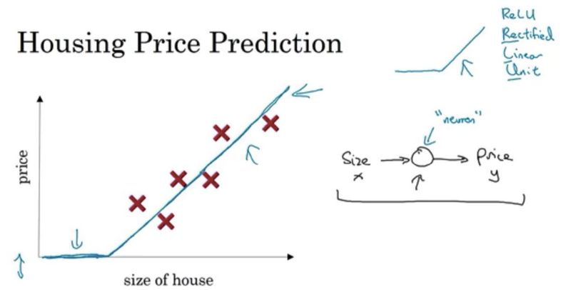
但有点奇怪的是，你可能也发现了，我们知道价格永远不会是负数的。因此，为了替代一条可能会让价格为负的直线，我们把直线弯曲一点，让它最终在零结束。这条粗的蓝线最终就是你的函数，用于根据房屋面积预测价格。有部分是零，而直线的部分拟合的很好。你也许认为这个函数只拟合房屋价格。
作为一个神经网络，这几乎可能是最简单的神经网络。我们把房屋的面积作为神经网络的输入（我们称之为），通过一个节点（一个小圆圈），最终输出了价格（我们用表示）。其实这个小圆圈就是一个单独的神经元。接着你的网络实现了左边这个函数的功能。
在有关神经网络的文献中，你经常看得到这个函数。从趋近于零开始，然后变成一条直线。这个函数被称作ReLU激活函数，它的全称是Rectified Linear Unit。rectify（修正）可以理解成，这也是你得到一个这种形状的函数的原因。
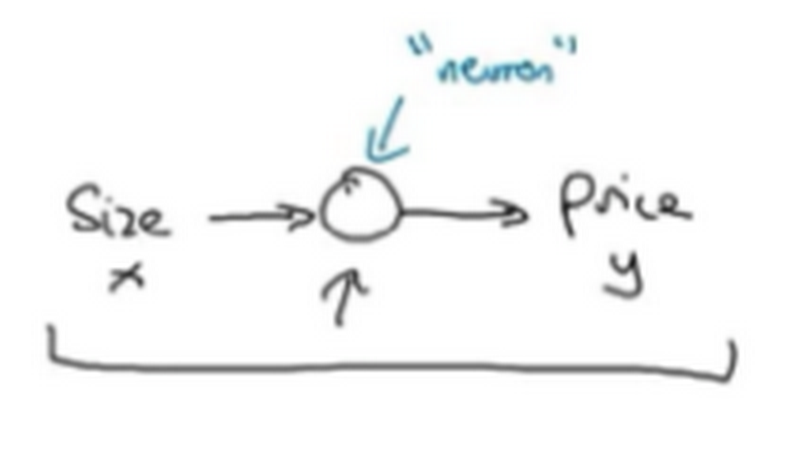
你现在不用担心不理解ReLU函数，你将会在这门课的后面再次看到它。
如果这是一个单神经元网络，不管规模大小，它正是通过把这些单个神经元叠加在一起来形成。如果你把这些神经元想象成单独的乐高积木，你就通过搭积木来完成一个更大的神经网络。
让我们来看一个例子，我们不仅仅用房屋的面积来预测它的价格，现在你有了一些有关房屋的其它特征，比如卧室的数量，或许有一个很重要的因素，一家人的数量也会影响房屋价格，这个房屋能住下一家人或者是四五个人的家庭吗？而这确实是基于房屋大小，以及真正决定一栋房子是否能适合你们家庭人数的卧室数。
换个话题，你可能知道邮政编码或许能作为一个特征，告诉你步行化程度。比如这附近是不是高度步行化，你是否能步行去杂货店或者是学校，以及你是否需要驾驶汽车。有些人喜欢居住在以步行为主的区域，另外根据邮政编码还和富裕程度相关（在美国是这样的）。但在其它国家也可能体现出附近学校的水平有多好。
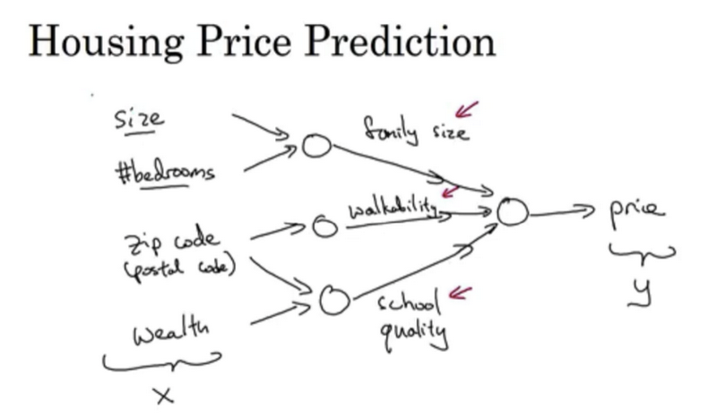
在图上每一个画的小圆圈都可以是ReLU的一部分，也就是指修正线性单元，或者其它稍微非线性的函数。基于房屋面积和卧室数量，可以估算家庭人口，基于邮编，可以估测步行化程度或者学校的质量。最后你可能会这样想，这些决定人们乐意花费多少钱。
对于一个房子来说，这些都是与它息息相关的事情。在这个情景里，家庭人口、步行化程度以及学校的质量都能帮助你预测房屋的价格。以此为例， 是所有的这四个输入， 是你尝试预测的价格，把这些单个的神经元叠加在一起，我们就有了一个稍微大一点的神经网络。这显示了神经网络的神奇之处，虽然我已经描述了一个神经网络，它可以需要你得到房屋面积、步行化程度和学校的质量，或者其它影响价格的因素。 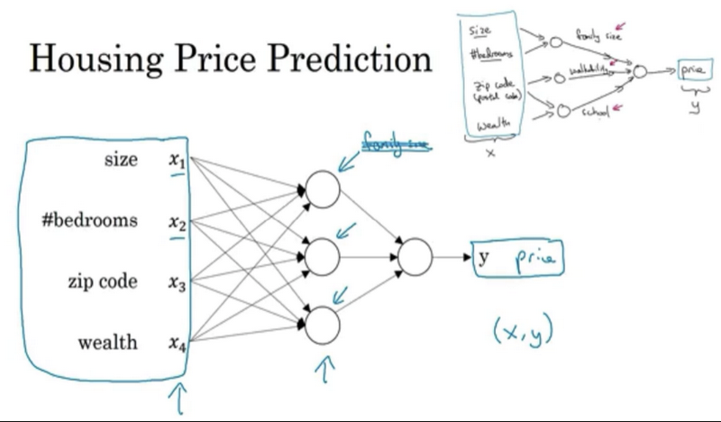 神经网络的一部分神奇之处在于，当你实现它之后，你要做的只是输入，就能得到输出。因为它可以自己计算你训练集中样本的数目以及所有的中间过程。所以，你实际上要做的就是：这里有四个输入的神经网络，这输入的特征可能是房屋的大小、卧室的数量、邮政编码和区域的富裕程度。给出这些输入的特征之后，神经网络的工作就是预测对应的价格。同时也注意到这些被叫做隐藏单元圆圈，在一个神经网络中，它们每个都从输入的四个特征获得自身输入，比如说，第一个结点代表家庭人口，而家庭人口仅仅取决于和特征，换句话说，在神经网络中，你决定在这个结点中想要得到什么，然后用所有的四个输入来计算想要得到的。因此，我们说输入层和中间层被紧密的连接起来了。
值得注意的是神经网络给予了足够多的关于和的数据，给予了足够的训练样本有关和。神经网络非常擅长计算从到的精准映射函数。
这就是一个基础的神经网络。你可能发现你自己的神经网络在监督学习的环境下是如此的有效和强大，也就是说你只要尝试输入一个，即可把它映射成，就好像我们在刚才房价预测的例子中看到的效果。
在下一个视频中，让我们复习一下更多监督学习的例子，有些例子会让你觉得你的网络会十分有用，并且你实际应用起来也是如此。
关于神经网络也有很多的种类，考虑到它们的使用效果，有些使用起来恰到好处，但事实表明，到目前几乎所有由神经网络创造的经济价值，本质上都离不开一种叫做监督学习的机器学习类别，让我们举例看看。
在监督学习中你有一些输入，你想学习到一个函数来映射到一些输出，比如我们之前提到的房价预测的例子，你只要输入有关房屋的一些特征，试着去输出或者估计价格。我们举一些其它的例子，来说明神经网络已经被高效应用到其它地方。
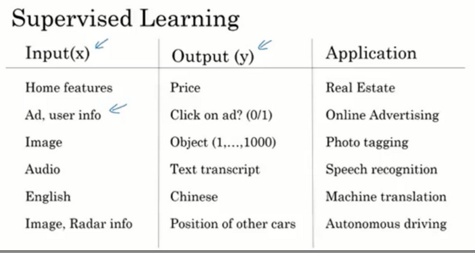
如今应用深度学习获利最多的一个领域，就是在线广告。这也许不是最鼓舞人心的，但真的很赚钱。具体就是通过在网站上输入一个广告的相关信息，因为也输入了用户的信息，于是网站就会考虑是否向你展示广告。
神经网络已经非常擅长预测你是否会点开这个广告，通过向用户展示最有可能点开的广告，这就是神经网络在很多家公司难以置信地提高获利的一种应用。因为有了这种向你展示你最有可能点击的广告的能力，而这一点击的行为的改变会直接影响到一些大型的在线广告公司的收入。
计算机视觉在过去的几年里也取得了长足的进步，这也多亏了深度学习。你可以输入一个图像，然后想输出一个索引，范围从1到1000来试着告诉你这张照片，它可能是，比方说，1000个不同的图像中的任何一个，所以你可能会选择用它来给照片打标签。
深度学习最近在语音识别方面的进步也是非常令人兴奋的，你现在可以将音频片段输入神经网络，然后让它输出文本记录。得益于深度学习，机器翻译也有很大的发展。你可以利用神经网络输入英语句子，接着输出一个中文句子。
在自动驾驶技术中，你可以输入一幅图像，就好像一个信息雷达展示汽车前方有什么，据此，你可以训练一个神经网络，来告诉汽车在马路上面具体的位置，这就是神经网络在自动驾驶系统中的一个关键成分。
那么深度学习系统已经可以创造如此多的价值，通过智能的选择，哪些作为哪些作为，来针对于你当前的问题，然后拟合监督学习部分，往往是一个更大的系统，比如自动驾驶。这表明神经网络类型的轻微不同，也可以产生不同的应用，比如说，应用到我们在上一个视频提到的房地产领域，我们不就使用了一个普遍标准神经网络架构吗？
也许对于房地产和在线广告来说可能是相对的标准一些的神经网络，正如我们之前见到的。对于图像应用，我们经常在神经网络上使用卷积（Convolutional Neural Network），通常缩写为CNN。对于序列数据，例如音频，有一个时间组件，随着时间的推移，音频被播放出来，所以音频是最自然的表现。作为一维时间序列（两种英文说法one-dimensional time series / temporal sequence）.对于序列数据，经常使用RNN，一种递归神经网络（Recurrent Neural Network），语言，英语和汉语字母表或单词都是逐个出现的，所以语言也是最自然的序列数据，因此更复杂的RNNs版本经常用于这些应用。
对于更复杂的应用比如自动驾驶，你有一张图片，可能会显示更多的CNN卷积神经网络结构，其中的雷达信息是完全不同的，你可能会有一个更定制的，或者一些更复杂的混合的神经网络结构。所以为了更具体地说明什么是标准的CNN和RNN结构，在文献中你可能见过这样的图片，这是一个标准的神经网络。
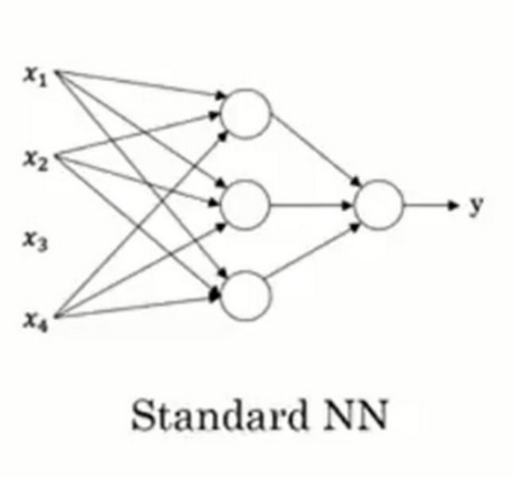
你也可能见过这样的图片，这是一个卷积神经网络的例子。
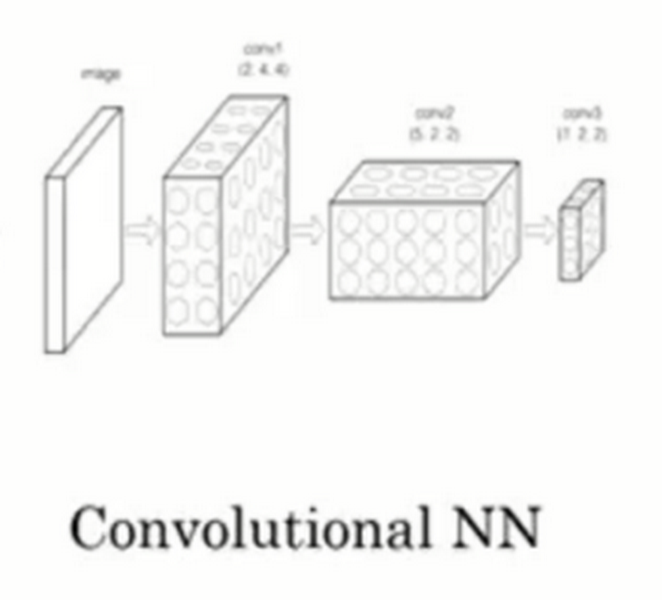
我们会在后面的课程了解这幅图的原理和实现，卷积网络(CNN)通常用于图像数据。
你可能也会看到这样的图片，而且你将在以后的课程中学习如何实现它。
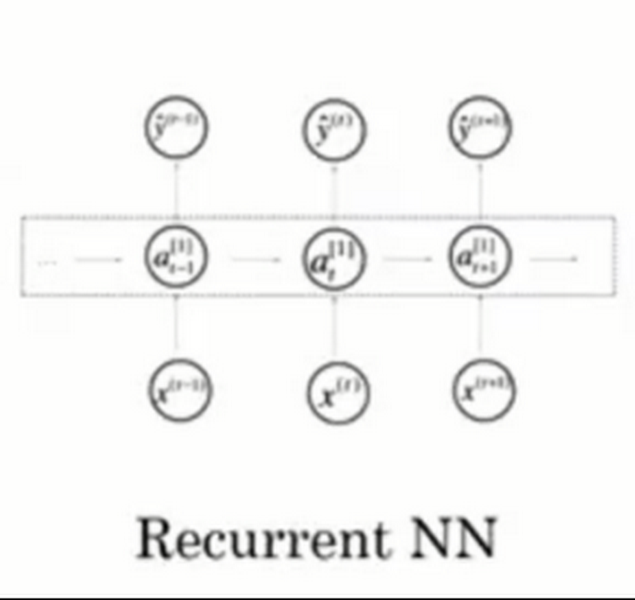
递归神经网络(RNN)非常适合这种一维序列，数据可能是一个时间组成部分。
你可能也听说过机器学习对于结构化数据和非结构化数据的应用，结构化数据意味着数据的基本数据库。例如在房价预测中，你可能有一个数据库，有专门的几列数据告诉你卧室的大小和数量，这就是结构化数据。或预测用户是否会点击广告，你可能会得到关于用户的信息，比如年龄以及关于广告的一些信息，然后对你的预测分类标注，这就是结构化数据，意思是每个特征，比如说房屋大小卧室数量，或者是一个用户的年龄，都有一个很好的定义。
相反非结构化数据是指比如音频，原始音频或者你想要识别的图像或文本中的内容。这里的特征可能是图像中的像素值或文本中的单个单词。
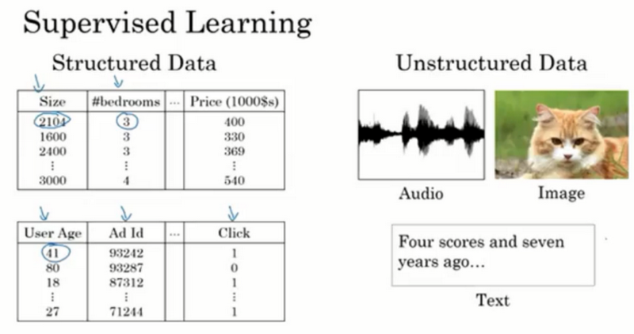
从历史经验上看，处理非结构化数据是很难的，与结构化数据比较，让计算机理解非结构化数据很难，而人类进化得非常善于理解音频信号和图像，文本是一个更近代的发明，但是人们真的很擅长解读非结构化数据。
神经网络的兴起就是这样最令人兴奋的事情之一，多亏了深度学习和神经网络，计算机现在能更好地解释非结构化数据，这是与几年前相比的结果，这为我们创造了机会。许多新的令人兴奋的应用被使用，语音识别、图像识别、自然语言文字处理，甚至可能比两三年前的还要多。因为人们天生就有本领去理解非结构化数据，你可能听说了神经网络更多在媒体非结构化数据的成功，当神经网络识别了一只猫时那真的很酷，我们都知道那意味着什么。
但结果也表明，神经网络在许多短期经济价值的创造，也是基于结构化数据的。比如更好的广告系统、更好的利润建议，还有更好的处理大数据的能力。许多公司不得不根据神经网络做出准确的预测。
因此在这门课中，我们将要讨论的许多技术都将适用，不论是对结构化数据还是非结构化数据。为了解释算法，我们将在使用非结构化数据的示例中多画一点图片，但正如你所想的，你自己团队里通过运用神经网络，我希望你能发现，神经网络算法对于结构化和非结构化数据都有用处。
神经网络已经改变了监督学习，正创造着巨大的经济价值，事实证明，基本的神经网络背后的技术理念大部分都离我们不遥远，有的是几十年，那么为什么他们现在才刚刚起步，效果那么好，下一集视频中我们将讨论为什么最近的神经网络已经成为你可以使用的强大工具。
本节视频主要讲了推动深度学习变得如此热门的主要因素。包括数据规模、计算量及算法的创新。
深度学习和神经网络之前的基础技术理念已经存在大概几十年了，为什么它们现在才突然流行起来呢？本节课程主要讲述一些使得深度学习变得如此热门的主要驱动因素，这将会帮助你在你的组织机构内发现最好的时机来应用这些东西。
在过去的几年里，很多人都问我为什么深度学习能够如此有效。当我回答这个问题时，我通常给他们画个图，在水平轴上画一个形状，在此绘制出所有任务的数据量，而在垂直轴上，画出机器学习算法的性能。比如说准确率体现在垃圾邮件过滤或者广告点击预测，或者是神经网络在自动驾驶汽车时判断位置的准确性，根据图像可以发现，如果你把一个传统机器学习算法的性能画出来，作为数据量的一个函数，你可能得到一个弯曲的线，就像图中这样，它的性能一开始在增加更多数据时会上升，但是一段变化后它的性能就会像一个高原一样。假设你的水平轴拉的很长很长，它们不知道如何处理规模巨大的数据，而过去十年的社会里，我们遇到的很多问题只有相对较少的数据量。
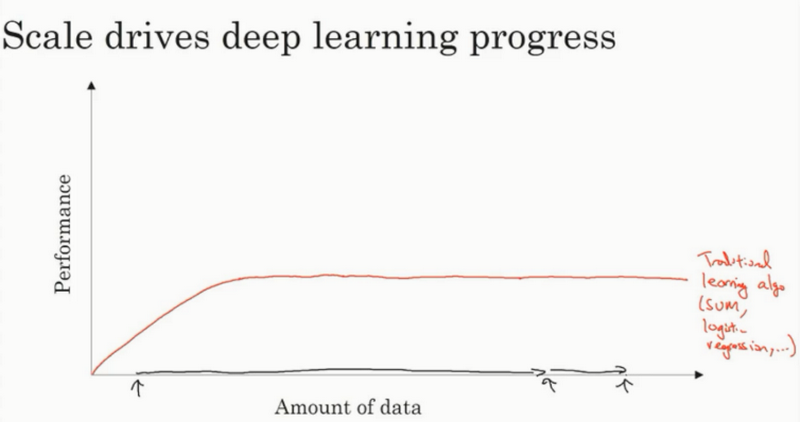
多亏数字化社会的来临，现在的数据量都非常巨大，我们花了很多时间活动在这些数字的领域，比如在电脑网站上、在手机软件上以及其它数字化的服务，它们都能创建数据，同时便宜的相机被配置到移动电话，还有加速仪及各类各样的传感器，同时在物联网领域我们也收集到了越来越多的数据。仅仅在过去的20年里对于很多应用，我们便收集到了大量的数据，远超过机器学习算法能够高效发挥它们优势的规模。
神经网络展现出的是，如果你训练一个小型的神经网络，那么这个性能可能会像下图黄色曲线表示那样；如果你训练一个稍微大一点的神经网络，比如说一个中等规模的神经网络（下图蓝色曲线），它在某些数据上面的性能也会更好一些；如果你训练一个非常大的神经网络，它就会变成下图绿色曲线那样，并且保持变得越来越好。因此可以注意到两点：如果你想要获得较高的性能体现，那么你有两个条件要完成，第一个是你需要训练一个规模足够大的神经网络，以发挥数据规模量巨大的优点，另外你需要能画到轴的这个位置，所以你需要很多的数据。因此我们经常说规模一直在推动深度学习的进步，这里的规模指的也同时是神经网络的规模，我们需要一个带有许多隐藏单元的神经网络，也有许多的参数及关联性，就如同需要大规模的数据一样。事实上如今最可靠的方法来在神经网络上获得更好的性能，往往就是要么训练一个更大的神经网络，要么投入更多的数据，这只能在一定程度上起作用，因为最终你耗尽了数据，或者最终你的网络是如此大规模导致将要用太久的时间去训练，但是仅仅提升规模的的确确地让我们在深度学习的世界中摸索了很多时间。为了使这个图更加从技术上讲更精确一点，我在轴下面已经写明的数据量，这儿加上一个标签（label）量，通过添加这个标签量，也就是指在训练样本时，我们同时输入和标签，接下来引入一点符号，使用小写的字母表示训练集的规模，或者说训练样本的数量，这个小写字母就横轴结合其他一些细节到这个图像中。
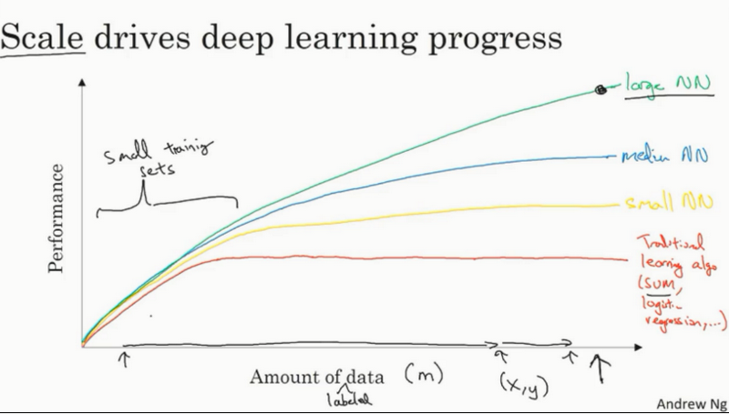
在这个小的训练集中，各种算法的优先级事实上定义的也不是很明确，所以如果你没有大量的训练集，那效果会取决于你的特征工程能力，那将决定最终的性能。假设有些人训练出了一个SVM（支持向量机）表现的更接近正确特征，然而有些人训练的规模大一些，可能在这个小的训练集中SVM算法可以做的更好。因此你知道在这个图形区域的左边，各种算法之间的优先级并不是定义的很明确，最终的性能更多的是取决于你在用工程选择特征方面的能力以及算法处理方面的一些细节，只是在某些大数据规模非常庞大的训练集，也就是在右边这个会非常的大时，我们能更加持续地看到更大的由神经网络控制的其它方法，因此如果你的任何某个朋友问你为什么神经网络这么流行，我会鼓励你也替他们画这样一个图形。
所以可以这么说，在深度学习萌芽的初期，数据的规模以及计算量，局限在我们对于训练一个特别大的神经网络的能力，无论是在CPU还是GPU上面，那都使得我们取得了巨大的进步。但是渐渐地，尤其是在最近这几年，我们也见证了算法方面的极大创新。许多算法方面的创新，一直是在尝试着使得神经网络运行的更快。
作为一个具体的例子，神经网络方面的一个巨大突破是从sigmoid函数转换到一个ReLU函数，这个函数我们在之前的课程里提到过。
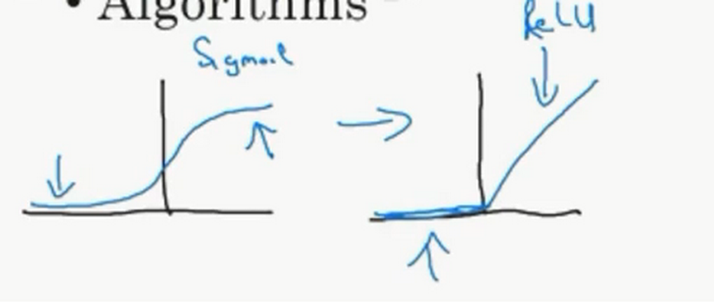
如果你无法理解刚才我说的某个细节，也不需要担心，可以知道的一个使用sigmoid函数和机器学习问题是，在这个区域，也就是这个sigmoid函数的梯度会接近零，所以学习的速度会变得非常缓慢，因为当你实现梯度下降以及梯度接近零的时候，参数会更新的很慢，所以学习的速率也会变的很慢，而通过改变这个被叫做激活函数的东西，神经网络换用这一个函数，叫做ReLU的函数（修正线性单元），ReLU它的梯度对于所有输入的负值都是零，因此梯度更加不会趋向逐渐减少到零。而这里的梯度，这条线的斜率在这左边是零，仅仅通过将Sigmod函数转换成ReLU函数，便能够使得一个叫做梯度下降（gradient descent）的算法运行的更快，这就是一个或许相对比较简单的算法创新的例子。但是根本上算法创新所带来的影响，实际上是对计算带来的优化，所以有很多像这样的例子，我们通过改变算法，使得代码运行的更快，这也使得我们能够训练规模更大的神经网络，或者是多端口的网络。即使我们从所有的数据中拥有了大规模的神经网络，快速计算显得更加重要的另一个原因是，训练你的神经网络的过程，很多时候是凭借直觉的，往往你对神经网络架构有了一个想法，于是你尝试写代码实现你的想法，然后让你运行一个试验环境来告诉你，你的神经网络效果有多好，通过参考这个结果再返回去修改你的神经网络里面的一些细节，然后你不断的重复上面的操作，当你的神经网络需要很长时间去训练，需要很长时间重复这一循环，在这里就有很大的区别，根据你的生产效率去构建更高效的神经网络。当你能够有一个想法，试一试，看效果如何。在10分钟内，或者也许要花上一整天，如果你训练你的神经网络用了一个月的时间，有时候发生这样的事情，也是值得的，因为你很快得到了一个结果。在10分钟内或者一天内，你应该尝试更多的想法，那极有可能使得你的神经网络在你的应用方面工作的更好、更快的计算，在提高速度方面真的有帮助，那样你就能更快地得到你的实验结果。这也同时帮助了神经网络的实验人员和有关项目的研究人员在深度学习的工作中迭代的更快，也能够更快的改进你的想法，所有这些都使得整个深度学习的研究社群变的如此繁荣，包括令人难以置信地发明新的算法和取得不间断的进步，这些都是开拓者在做的事情，这些力量使得深度学习不断壮大。
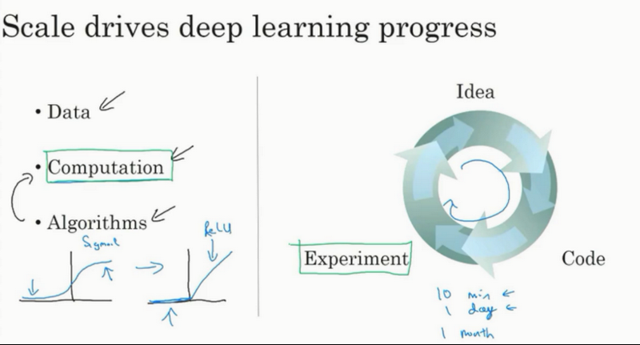
好消息是这些力量目前也正常不断的奏效，使得深度学习越来越好。研究表明我们的社会仍然正在抛出越来越多的数字化数据，或者用一些特殊的硬件来进行计算，比如说GPU，以及更快的网络连接各种硬件。我非常有信心，我们可以做一个超级大规模的神经网络，而计算的能力也会进一步的得到改善，还有算法相对的学习研究社区连续不断的在算法前沿产生非凡的创新。根据这些我们可以乐观地回答，同时对深度学习保持乐观态度，在接下来的这些年它都会变的越来越好。
你的学习进度已经快接近这个专项课程的第一门课的第一周结尾了，首先，快速地介绍一下下周的学习内容：
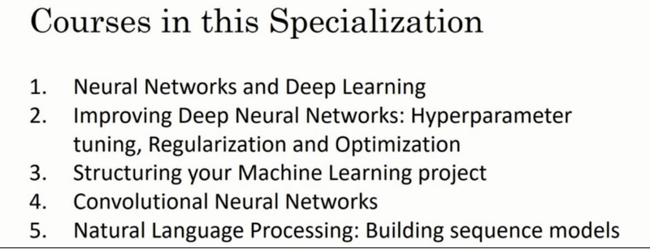
在第一个视频已经提到，这个专项有五门课程，目前正处于第一门课：神经网络与深度学习。在这门课中将教会你最重要的基础知识。当学习到第一门课末尾，你将学到如何建立一个深度神经网络并且使之奏效。
下面是关于第一门课的一些细节，这门课有四周的学习资料：
第一周：关于深度学习的介绍。在每一周的结尾也会有十个多选题用来检验自己对材料的理解；
第二周：关于神经网络的编程知识，了解神经网络的结构，逐步完善算法并思考如何使得神经网络高效地实现。从第二周开始做一些编程训练（付费项目），自己实现算法；
第三周：在学习了神经网络编程的框架之后，你将可以编写一个隐藏层神经网络，所以需要学习所有必须的关键概念来实现神经网络的工作；
第四周：建立一个深层的神经网络。
这段视频即将结束，希望在这段视频之后，你们可以看看课程网站的十道选择题来检查自己的理解，不必复习前面的知识，有的知识是你现在不知道的，可以不断尝试，直到全部做对以理解全部概念。
我希望你们喜欢这门课程，为了帮助你们完成课程，本次课程将列举一些课程资源。
首先，如果你有任何疑问，或是想和其他同学讨论问题，或是想和包括我在内的教学人员讨论任何问题，或是想要归档一个错误，论坛是最好的去处，我和其他教学人员将定期关注论坛的内容。论坛也是一个你从同学那里得到问题答案的好地方，如果想要回答同学的问题，可以从课程首页来到论坛：
点击论坛标签可以进入论坛
在论坛上是提问的最佳途径，但是出于一些原因，可能要直接联系我们，可以将邮件发送到这个地址，我们会尽力阅读每一份邮件并尝试解决普遍出现的问。由于邮件数量庞大，不一定能迅速回复每一封邮件。另外，一些公司会尝试给员工做深度学习培训，如果你们想对员工负责，聘请专家培训上百甚至更多员工深度学习，请用企业邮箱与我们联系。我们处在大学学术开发的初始阶段，如果你是大学领导或者是管理人员，并且希望在你们学校开设一门深度学习课程，请通过大学邮箱联系我们。邮箱地址如下，祝你们好运！
Contact us: feedback@deeplearning.ai
Companies: enterprise@deeplearning.ai
Universities: academic@deeplearning.ai